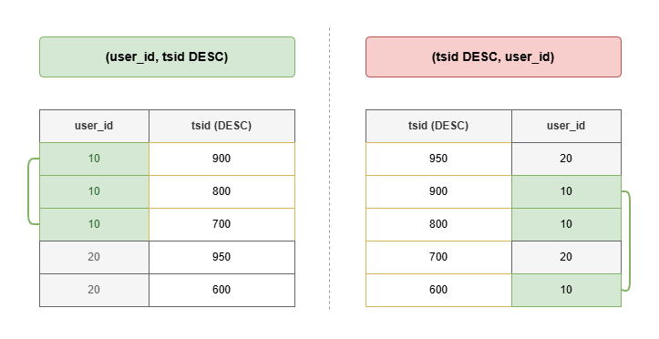

채팅 기록 조회의 페이지네이션 방식을 검토하고 복합 인덱스를 설계하여 조회 시간을 70% 단축한 사례입니다.
채팅 기록 조회 기능을 구현하기 위해 페이지네이션이 필요했습니다.
페이지네이션 없이 조회할 경우 모든 채팅 기록을 한 번에 가져와야 하므로, 데이터가 많을수록 응답 크기가 커지고 불필요한 데이터까지 전송되어 성능이 저하됩니다.
채팅 기록 조회의 특성을 고려하여 적합한 페이지네이션 방식을 선택하기로 했습니다.
-- 문제 쿼리
SELECT *
FROM chatting
WHERE user_id = 10
ORDER BY tsid DESC
LIMIT 50 OFFSET 10000;
-- 실행 계획
Parallel Seq Scan on chatting
Filter: (user_id = 10)
Rows Removed by Filter: 329,957
Execution Time: 61.332 ms
따라서 마지막으로 조회한 레코드를 기준으로 다음 데이터를 요청하는 cursor 방식을 목표로 설정하였습니다.
마지막으로 조회한 레코드의 tsid를 cursor로 사용하여, 해당 cursor보다 이전에 생성된 데이터만 조회하도록 쿼리를 변경하였습니다. 이를 통해 앞의 모든 행을 읽고 버리는 불필요한 스캔이 사라지고, 실시간으로 새로운 채팅이 추가되더라도 중복 조회나 누락 없이 안정적으로 동작합니다.
SELECT *
FROM chatting
WHERE user_id = ? AND tsid < :cursor
ORDER BY tsid DESC
LIMIT 50;
cursor 방식 쿼리의 조회 조건인 user_id와 정렬 기준인 tsid DESC를
함께 고려하여 복합 인덱스를 추가하였습니다. 이를 통해 특정 사용자의 채팅 기록을 조회할 때
풀 테이블 스캔 없이 인덱스만으로 필요한 데이터를 빠르게 찾을 수 있습니다.
CREATE INDEX idx_chat_user_tsid
ON chatting (user_id, tsid DESC);
왼쪽 표처럼 user_id, tsid DESC 순서대로 복합 인덱스를 구성해야 특정 유저에 대한 채팅 기록을 효율적으로 가져올 수 있습니다.
그에 비해 우측 표처럼 tsid DESC, user_id 순서대로 복합 인덱스를 구성하면, tsid DESC 정렬이 우선되기 때문에 user_id가 흩어져 있을 가능성이 있습니다.
한번 더 필터링을 하거나, 흩어짐 정도에 따라 풀 테이블 스캔이 더 효율적일 수도 있습니다.
커서 방식 전환 및 복합 인덱스 적용 후 실행 시간을 비교하여 성능 개선을 확인하였습니다.
인덱스 적용 후에는 (user_id, tsid DESC) 복합 인덱스를 통해
두 조건이 Index Cond에서 함께 처리되어 불필요하게 버리는 행이 사라졌습니다.
그 결과 실행 시간은 0.056ms → 0.017ms로 약 70% 단축되었습니다.
이번 작업을 통해 데이터가 늘어나도 안정적으로 동작할 수 있는 구조를 고민하게 되었습니다. 이전 채팅 조회 방식을 검토하는 과정에서 무한 스크롤이 사용성 면에서 유리하다고 판단하였고, cursor 방식을 선택하여 대용량 데이터에서도 일관된 성능을 유지할 수 있는 구조를 설계하였습니다.
또한, EXPLAIN ANALYZE를 통해 쿼리가 내부적으로 어떻게 동작하는지 구체적으로 이해할 수 있었습니다.
offset 방식이 겉으로는 동작하더라도 내부적으로 순차 스캔과 대량의 행 버림이 발생한다는 것과
복합 인덱스는 단순히 컬럼을 묶는 것이 아니라 순서 자체가 디스크 I/O와 직결된다는 것을 수치로 직접 확인할 수 있었습니다.
앞으로 쿼리를 작성할 때 실행 계획을 먼저 확인하는 습관을 들여야겠다고 느꼈습니다.